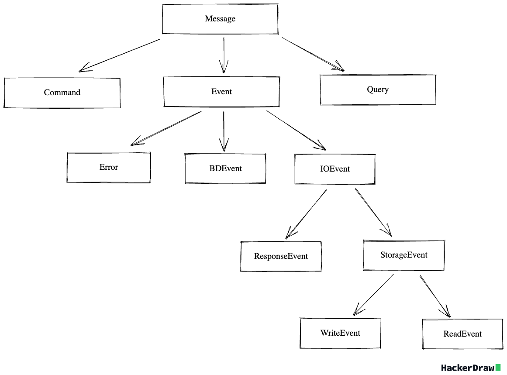

Codex
Codex - набор типов и интерфейсов для архитектуры современных приложений
Подключение
Состав
- cqea: набор интерфейсов для построения event driven CQRS архитектур
- query: набор базовых типов для построения инструментов доступа к данным
- di: набор интерфейсов для реализации Dependency Injection
- identity: набор интерфейсов для реализации различных Identity
СQEA
Command Query Event Actor - набор типов и интерфесов для построения реактивного приложения.
Базовые типы
Message - базовая сущность переноса информации в системе. Ниже представлена иерархия типов сообщений

Actor - контракт сущности обработчика сообщения. Есть уточнения данного контракта, не находящиеся в отношениях наследования друг с другом:
- Domain Actor
- Write Actor
- Read Actor
- AuditActor
Уточненными контрактами можно пользоваться если есть необходимость задать более узкую зону ответственности актора
Query
Набор контрактов для организации запросов к данным
Bits
Набор контрактов-контейнеров для маркировки запросов к данным
- FilterBit - фильтрация элементов набора данных
- OrderBit - сортировка элементов набора данных
- SliceBit - ограничение размера набора данных
Пример определения контракта запроса к данным:
import dataclasses
import datetime
from zodchy.codex.query import (
Query,
FilterBit,
OrderBit,
SliceBit
)
from zodchy import operators
@dataclasses.dataclass
class GetUsers(Query):
user_id: FilterBit[int] | None = None
user_name: FilterBit[str] | OrderBit | None = None
created_at: FilterBit[datetime.datetime] | OrderBit | None = None
limit: SliceBit | None = None
# Form Query
get_users_query = GetUsers(
user_id=operators.EQ(1),
user_name=operators.LIKE('jhon') + operators.DESC(1),
created_at=operators.ASC(2),
limit=operators.LIMIT(100)
)
Описание модуля operators можно найти здесь
FilterBit является generic типом, в квадратных скобках указывает тип принимаемых значений.
В клиентском коде следует избегать необходимости формирования запроса-значения (get_users_query) вручную, лучше это делать через адаптеры.
Хочется подчеркнуть, что это максимально высокоуровневые контейнеры, которые можно интерпретировать в библиотеках работы с запросами как угодно.
Parsing
- QueryType - контракт описывающий допустимое описание запроса к данным, может быть строкой или отображением имен параметров на значения.
- TypesMapType - контракт описывающий отображение имен параметров на их типы
- NotationParser - контракт для парсера запроса к данным. На вход принимает данные соотвествующие контрактам QueryType и TypesMapType и возвращающий итерируемый объект с кортежами имен параметров и распарсенных условий
Пример парсера можно посмотреть тут
DI
- DIContainerContract - контракт для реализации dependency injection контейнера
- DIResolverContract - контракт для реализации резолвера dependency injection
Identity
- IdentifiersFactory - контракт для реализации фабрик по генерации различных идентификаторов.